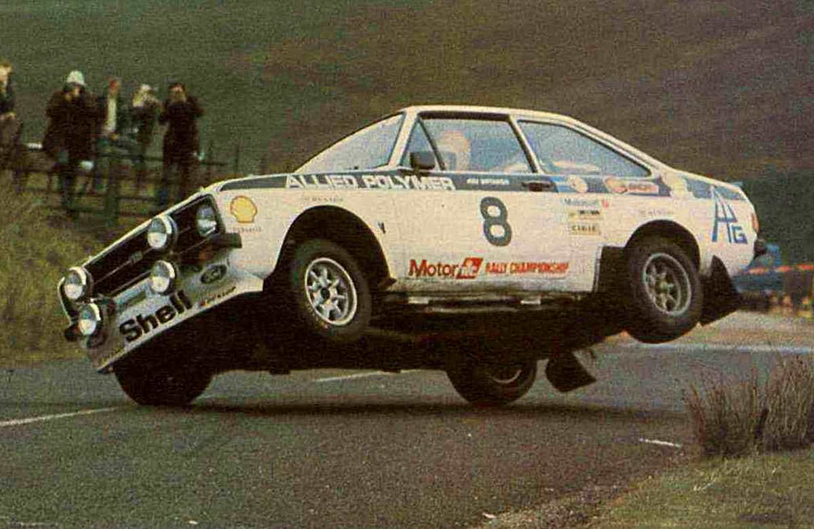
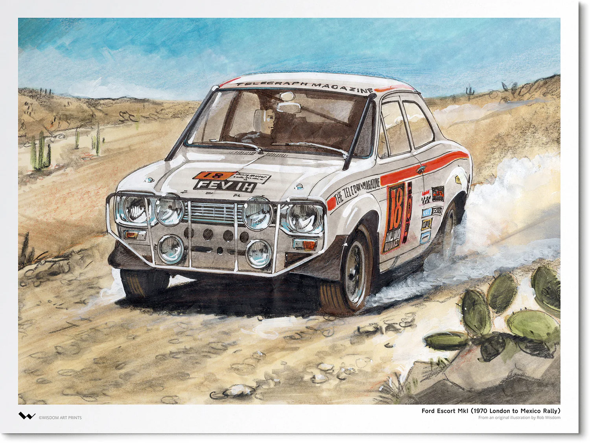
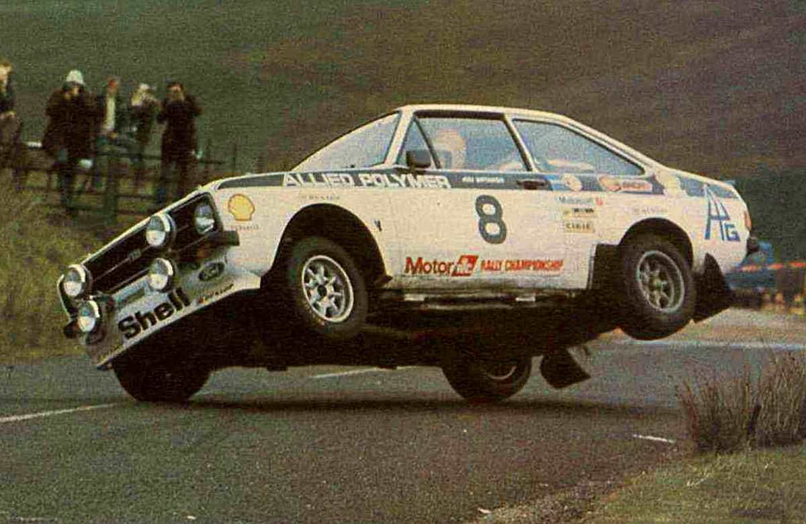
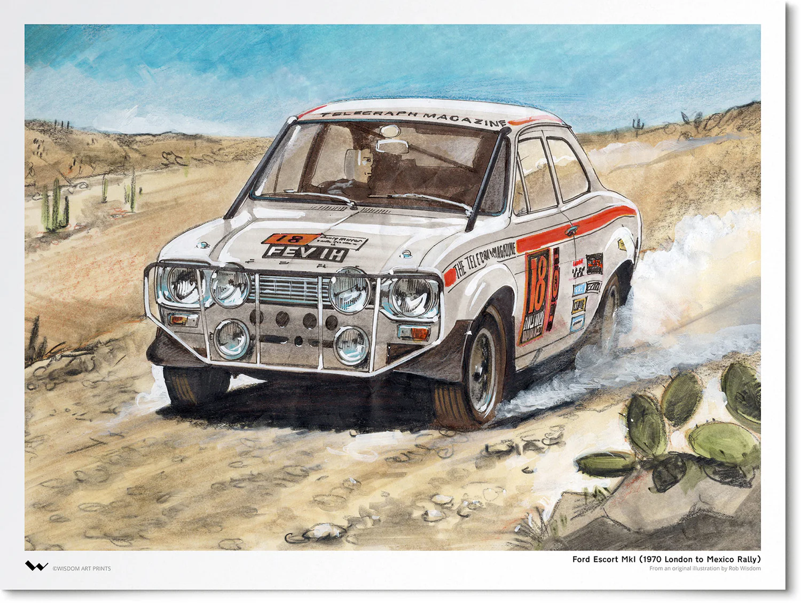

El rally es una de las disciplinas más exigentes del automovilismo, donde los pilotos deben enfrentar carreteras de asfalto, grava, nieve y tierra a lo largo de tramos cronometrados. A lo largo de su historia, ha evolucionado en varias categorías que marcaron hitos en el deporte.

 
